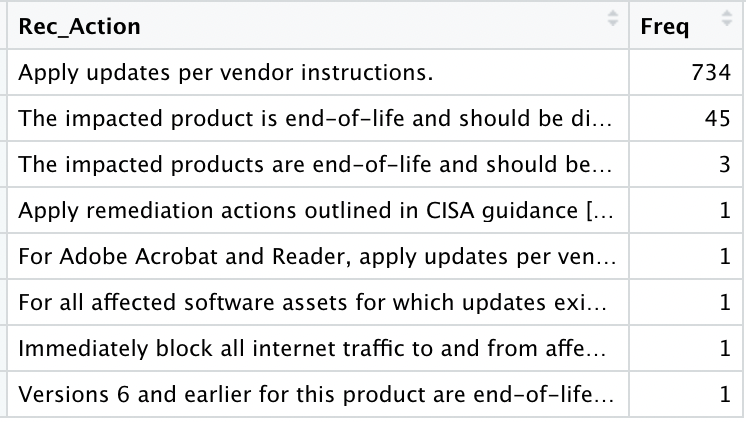
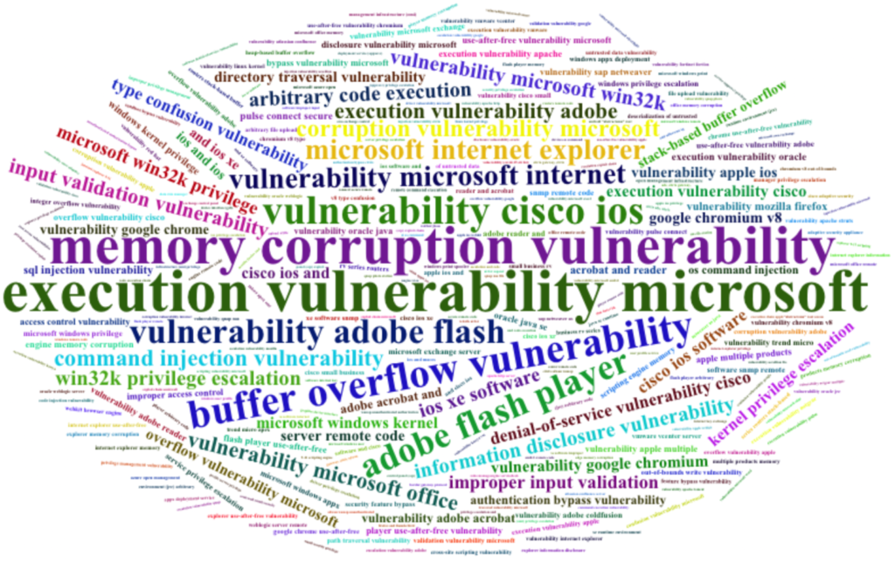
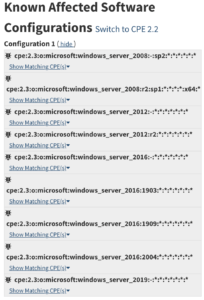

Intro
I keep hearing about it, so it was time I had a look at that famous CISA “Known Exploited Vulnerability” dataset. Also, it’s been a while since I did something more directly related to IT Security, so this is good.
It turns out, it’s quite… Simple (the dataset), and even clean, which makes things rather easy. So we’ll be quick about it.
Looking for a “Codebook”
So first, let’s have a look here to understand what this dataset is. (Looking at data without having any background sometimes needs to happen, but whenever possible, let’s avoid that)
There is not exactly a “codebook” that I could find, describing the dataset column by column, but as it is quite straightforward, the provided background is probably sufficient.
Getting the data
Today the code won’t be that complicated at all. We’ll first get the data, in JSON, and put it into a dataframe.
library(jsonlite) #fromJSON -> data.frame
library(httr) # GET/POST
library(dplyr)
library(ggplot2)
library(wordcloud2)
cisa_response <- httr::GET(url = "https://www.cisa.gov/sites/default/files/feeds/known_exploited_vulnerabilities.json",
content_type_json(), accept_json())
View(rawToChar(cisa_response$content))
kev_list <- fromJSON(txt = rawToChar(cisa_response$content))
kev_df <- kev_list[['vulnerabilities']]And that’s about it.
About Prevalence
So if we look (again: real quick) at the dataset, we easily get a feeling Microsoft, Google, Apple, Adobe… A few familiar names appear more often than others. Let’s check that assumption (not all results shown there, but you get the idea), and no need to be fancy, a simple table will do:

So yes, there is something there. But this time around, let’s use our understanding of the so-called “domain knowledge”: So the bad guys they really want to have tools that get them into systems (to get data) that are… used, by their targets.
This can be checked against things like (random search results for OS and software prevalence):
https://www.muchskills.com/blog/top-software-technical-tools-muchskills
https://statisticsanddata.org/data/most-popular-pc-software/
…
So it makes sense that the “known exploited vulnerabilities” affect often used products, say such as Microsoft (Windows, Office, etc.), Google (Chrome, Android…) or Apple (mostly iOS stuff). That’s not necessarily to say those products have more vulnerabilities than other products (although, the more complex the software…). No, not necessarily. It does say that more people (and organizations) use Windows, Chrome and iPhones, than say Firefox, though, but Firefox is still definitely in the short list.
Well, it’s probably really a mix of a few aspects: Prevalence (hackers interest), complexity (possibility to make mistakes), and due diligence (how much you care about the security of your software in the first place).
But let’s keep going.
Patch your systems
When looking at the recommended actions, we get few options, and really given the nature of the data provided here, it makes sense.

So it really boils down to this:
Patch your software
Remove unsupported software
Note: Patching implicitly supposes you have a license, where applicable. But that’s a different story.
How did I get the above tables, you ask? I’m surprised you would care, but here goes some sample code:
kev_actions_freqs <- as.data.frame(table(kev_df$requiredAction))
names(kev_actions_freqs)[1] <- "Rec_Action"
View(kev_actions_freqs %>% arrange(desc(Freq))) Making it a coding exercise
So far, no real coding challenge. But when trying to make sense of the “Vulnerability Names”, it became a bit more interesting.
While looking (manually) at the data first, I found out that most vulnerability names end with 2-3 words that somehow help categorize them. Things like “memory corruption vulnerability”, “adobe flash player”, “directory traversal vulnerability”…
OK so how can we have a look at the most commonly found 3-words occurrences among the vulnerability names? Using “N-grams”.
In text analysis and “Natural Language Processing”, N-grams are basically that: things (letters, words…) that occur together in the text. This is very useful for validating texts, propose next words to be typed, things like that.
Anyway, in our case, we’ll look for most common strings of “3 words” happening in our vulnerability names (just for fun). And for the visualization, although it’s more “fun” than “useful” (a table, like those above, would probably do better for serious work…), we’ll use a wordcloud (I mean, for this exercise, why not?)
library(ngram)
ng_words_seq <- paste(unlist(strsplit(tolower(kev_df$vulnerabilityName), " ")), collapse = " ")
ng_list <- ngram(ng_words_seq, n = 3)
wordcloud2(get.phrasetable(ng_list)[, 1:2] %>% filter(freq > 2))That’s it (it looks easy, but as it was the first time ever I used that ngram package, I had to read the documentation a bit :)).
And here the results:

You can tell some things occur more than others (also see Prevalence as explained earlier ;)).
“Buffer Overflow”, “Memory Corruption”, “Command Injection”, “Privilege Escalation”, “Improper input validation”, “Directory Traversal”, “Type Confusion”, “Access Control”…
Well, maybe a 2 words N-gram was a better idea after all (and removing “vulnerability”). Let’s try that (just for fun):
ng_words_seq <- gsub("vulnerability", "", ng_words_seq)
ng_list <- ngram(ng_words_seq, n = 2)
wordcloud2(get.phrasetable(ng_list)[, 1:2] %>% filter(freq > 2))It’s not much better. So maybe this is not the best approach, but fair enough, a good, quick exercise for today.
What KEV does not say
I’ve seen it, more than once, so I’m going to say it: It’s “NOT THAT EASY” to match two datasets of software names and versions. It turns out that some inventory (like this KEV thing) and security products (say some vulnerability management tool for example) will list the SAME SOFTWARE with DIFFERENT NAMES.
It sounds ridiculous, I know, but it goes like this, for instance: One might say “Microsoft Windows”, another one might say “MS Win Server 2019”. This very simple example, times the number of vendors of software, their product names, and versions names, times the number of possible ideas each product vendor comes up with… It rapidly becomes rather difficult (for an automated approach…).
One solution is to use the “CPE” (Common Platform Enumeration – which incidentally was created for just this purpose, see here) where possible.
For example, the KEV dataset mentions “CVE-2020-1350”, applicable to Vendor: Microsoft, Product: Windows. That’s a bit too generic for my taste, most companies have MANY Windows machines… Does this vulnerability affect servers, clients…?
One would then need to pivot somewhat, so if you search for the CVE, you easily end up on the MITRE page for it:
https://cve.mitre.org/cgi-bin/cvename.cgi?name=CVE-2020-1350
That still doesn’t give you the info you need, then you keep clicking links from there, and maybe you end up finding what you need here for example:
https://nvd.nist.gov/vuln/detail/CVE-2020-1350

Finally: This CVE affects certain (most, recent) versions of Windows Server. Now we’re able to leverage this information and go looking for servers in our network that match this and make sure these are patched.
I’m pretty sure there will be a downloadable CVE database (actually there seems to be an API from the NIST NVD, so there would be a good place to start… Maybe I’ll have some time to look into it in upcoming weeks.), but in the worst case scenario you can always crawl (one-by-one, no brute-forcing there, please, that would be against ethical use of their service) the pages referencing each CVE as you need them. Anyhow.
Conclusions
First of: No “big surprise” anywhere with this dataset. As said, it’s clean, clearcut, and just for that I’m thankful 😀
Second of all, we could keep going (there is a column of description, and one of dates… So we might want to use that maybe to extrapolate how much active the bad guys are by month, for example – although there are again too many confounding variables to conclude much there from just this dataset…)
The key aspect however of the CISA KEV dataset is its purpose: to help organizations (or anyone with some IT gear) to, as they put it on the website, “prioritize remediation”.
And that’s already an important aspect, as it’s easy in a company to have thousands of devices, with quite a few software products on each… Knowing what to take care of first is a good helping hand.
So once you have the KEV dataset, you’ll need to find the machines that are affected by each corresponding CVE, so that you can actually patch those first.
And as you’ll want to patch ALL your systems at some point, you might ask “why not do that directly”? Well, sometimes applying patches break stuff. So out of precaution, companies usually patch things in waves, usually by importance/business risk (say “Critical patches first, focus on Dev environment first, then low-business-criticality servers…”).
All this is saying is: you might want to review your patch waves to make sure you patch the systems affected by any of the CVEs in the KEV list sooner rather than later, somehow.
References
Quite a few today, but the main ones were: